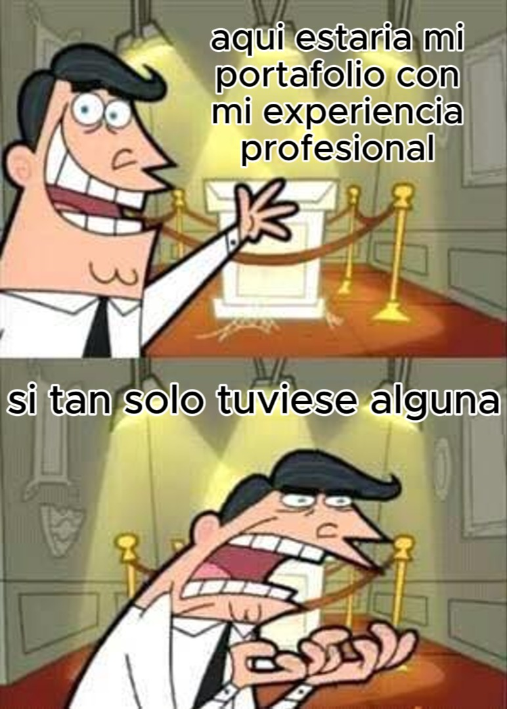

como veras, mi experiencia es extremadamente amplia, mi doctorado en comedia es evidente y no necesito nada mas para ser tu mejor opcion, pero por si eso no basta, mi educacion es la prueba definitiva de mi capacidad superdotada
mi educacion suena demasiado buena para ser real? tranquilo.. todos dicen eso, aqui tienes mi experiencia laboral y habilidades que te dejaran boquiabierto
pero.. que hace una mente brillante como la mia buscando trabajo en una empresa de mierda como la tuya? bueno, la realidad es que necesito un trabajo facil para tener mucho tiempo libre. Vagancia? no no no, el tiempo libre es para apuntar aun mas alto, la clave del exito es tener mis objetivos bien claros